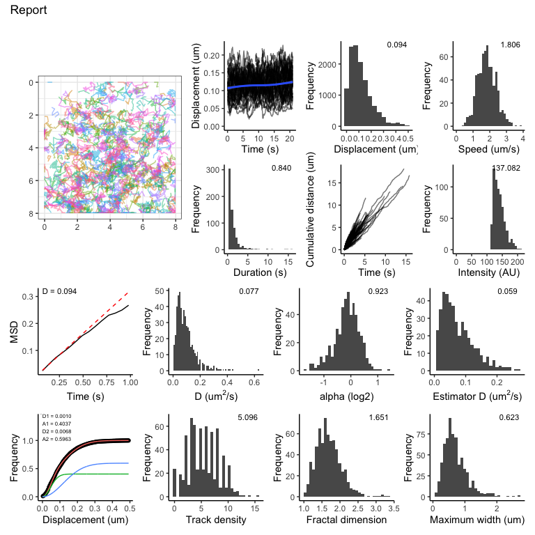

Analysis of TrackMate XML outputs in R.
TrackMate is a single-particle tracking plugin for ImageJ/Fiji. The standard output from a tracking session is in TrackMate XML format.
The goal of this R package is to import all of the data associated with the final filtered tracks in TrackMate for further analysis and visualization in R.
Installation
Once you have installed R and RStudio Desktop, you can install TrackMateR using devtools
# install.packages("devtools")
devtools::install_github("quantixed/TrackMateR")An Example
A basic example is to load one TrackMate XML file, calibrate it (if needed) and analyse it.
library(ggplot2)
library(TrackMateR)
# an example file is provided, otherwise use file.choose()
xmlPath <- system.file("extdata", "ExampleTrackMateData.xml", package="TrackMateR")
# read the TrackMate XML file into R using
tmObj <- readTrackMateXML(XMLpath = xmlPath)
#> Units are: 1 pixel and 0.07002736 s
#> Spatial units are in pixels - consider transforming to real units
#> Collecting spot data. Using 20 cores
#> Matching track data...
#> Calculating distances...
# Pixel size is actually 0.04 um and original data was 1 pixel, xyscalar = 0.04
tmObj <- correctTrackMateData(dataList = tmObj, xyscalar = 0.04, xyunit = "um")
#> Correcting XY scale.
# generate a report
reportDataset(tmObj)
TrackMateR can generate several different types of plot individually using commands or it can make them all automatically and create a report for you.
- For details of how to make individual plots and/or tweak the default parameters, see
vignette("TrackMateR") - To see how to compare different datasets, see
vignette("comparison") - In order to rescale or recalibrate TrackMate data, see
vignette("calibration")